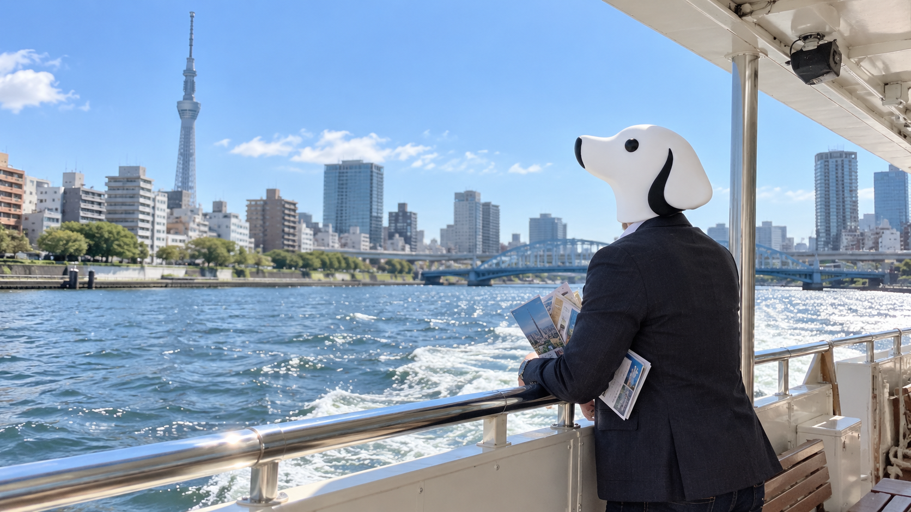

CEO'S NOTE
晴れた日に、乗る船を二度見る

こんにちは。TY-Dev Works CEOのT-Yです。
今日は一人で、都内の水上バスに乗っています。
仕事ではありません。
移動の必要もありません。
船に乗るために、船に乗りに来ました。
昨日は空港まで行って飛行機に乗りませんでした。
今日は船に乗ります。
少しだけ前進しています。
東京は久しぶりにしっかり晴れました。
東京都心の最高気温は30.0度。
10月になったので、僕の中では完全に秋のつもりでした。
気温のほうは、まだその仕様を読んでいなかったようです。
せっかく晴れたので、乗船してすぐ外のデッキへ出ました。
川面は明るい。
風も気持ちいい。
景色もいい。
四分後、僕は冷房の効いた船内に戻りました。
10月の太陽を少し信用しすぎました。
実は乗る前にも、小さな問題がありました。
時刻表を見て、出発時刻を確認。
あと三分。
船も来ています。
人も並んでいます。
条件はそろっています。
僕も並びました。
ところが、案内をもう一度見ると行き先が違います。
出発時刻だけ見て、目的地を見ていませんでした。
三分前。
船がいる。
人が並んでいる。
だから自分の船だろう。
人間は、かなり雑な条件式で動けます。
静かに隣の列へ移動しました。
昨日の空港でも似たようなことをした気がします。
記憶にはあります。
改善にはまだ反映されていません。
船内でコーヒーを飲みながら、今日のAIニュースを読みました。
Reutersによると、SynopsysとOpenAIは、半導体設計向けの専用AIモデル「GPT-Synopsys」を共同開発します。
回路の記述からトランジスタ配置まで、時間のかかる設計作業をAIで支援する狙いです。
興味深かったのは、AIが出した結果をそのまま正解にはしないことです。
最終的な精度や物理的な妥当性は、従来の計算手法を使った「sign-off」で確認するとされています。
生成する仕組みと、正しいか確かめる仕組み。
ここを分けているのが、とても大事だと思いました。
ソフトウェア開発でも同じです。
コードを書けることと、そのコードが正しいことは同じではありません。
ビルドが通る。
テストが通る。
画面が表示される。
それでも、本当に期待した動きになっているかは別の確認が必要です。
AIが速くコードを書くようになればなるほど、確認する側の設計はむしろ重要になります。
何をテストするのか。
どこまで自動で判定するのか。
最後に誰が確認するのか。
作る速度が上がるほど、確かめ方を雑にしない。
これは、これからの開発でかなり大事なことになりそうです。
僕も今日、出発時刻だけではなく行き先まで確認しました。
小規模ですが、sign-offです。
船は無事、予定していた場所に着きました。
帰りは慎重です。
行き先を見る。
時刻を見る。
乗り場を見る。
もう一度、行き先を見る。
完璧です。
帰宅してバッグを開けたら、水上バスの案内パンフレットが三部入っていました。
確認するたびに一部ずつ取っていたようです。
検証は大事ですが、ログを増やしすぎるのも問題です。
それでは、また。
Simple Software. A Better Tomorrow.
TY-Dev Works CEO
T-Y 🐕